استوديو الكورسات استوديو لتسجيل الدروس المرئية داخل المتصفح مباشرة: الشرائح والكاميرا والملقّن والتسجيل في نافذة واحدة. اختر ما تحتاجه، وسنريك الخطوات واحدة واحدة.
تحتاج إلى Chrome أو Edge على الحاسوب. Safari لا يصلح. لا حاجة لتثبيت أي شيء، فالاستوديو يُفتح من رابط.
لا تحتاج إلى شرائح: يعرض الاستوديو ما على الشاشة، ويضيف الكاميرا، ويسجّل كل ذلك في فيديو واحد.
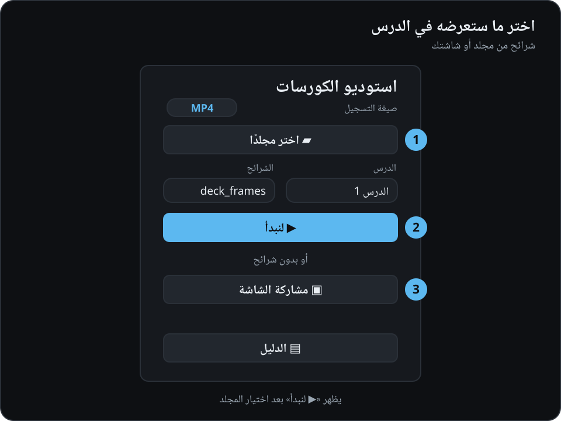
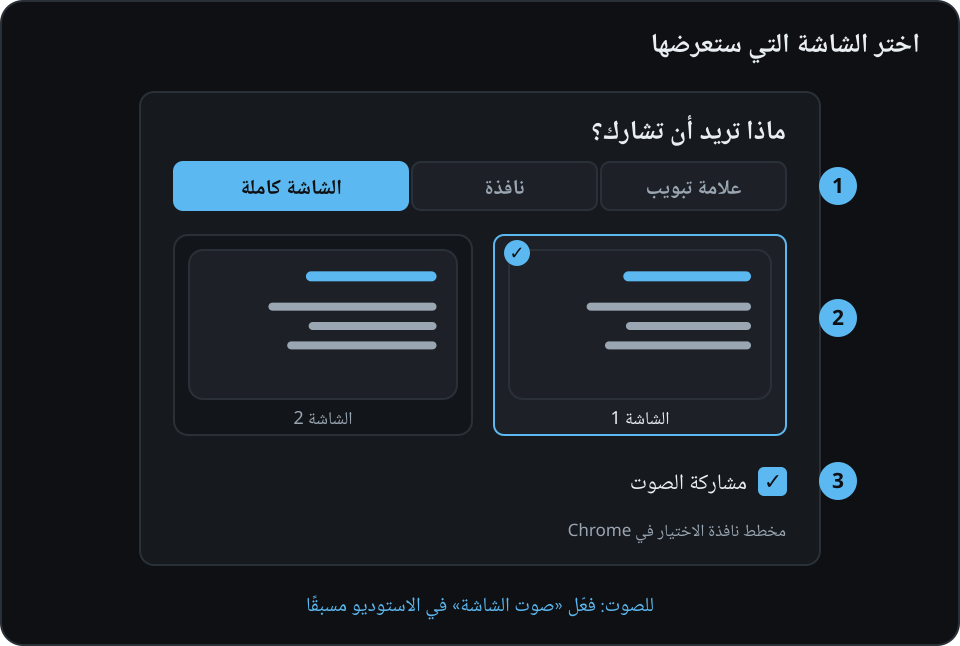
إن رأيت «⚠ الشاشة بلا صوت» فأوقف «🖥 الشاشة» ثم شغّلها من جديد وحدّد خانة الصوت.
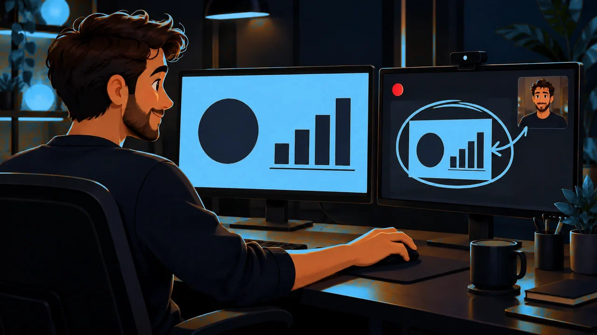
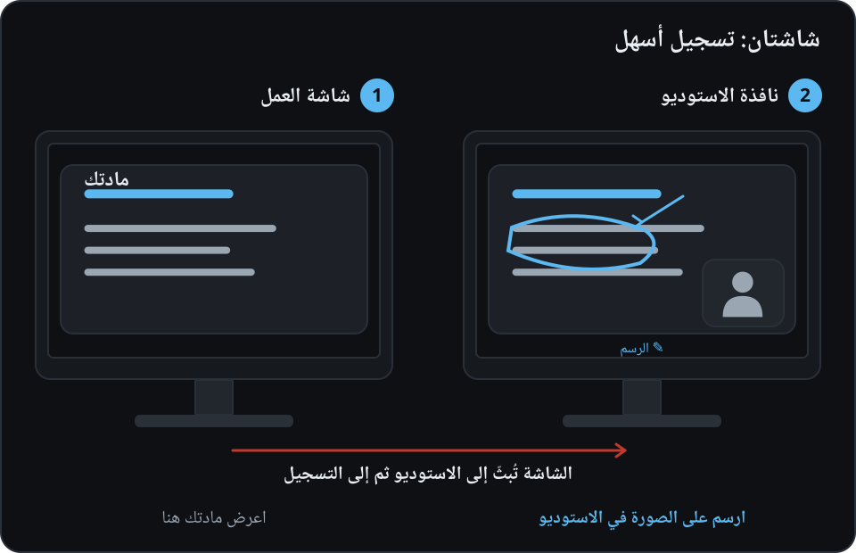
لا تشارك الشاشة التي فُتح عليها الاستوديو، وإلا ستحصل على «ممر المرايا»: صورة داخل صورة إلى ما لا نهاية.
الرسم ممكن داخل نافذة الاستوديو فقط. لن يظهر الرسم فوق سطح المكتب نفسه أو فوق برنامج آخر.
macOS: عند التشغيل الأول اسمح لـ Chrome بتسجيل الشاشة: إعدادات النظام ← الخصوصية والأمن ← تسجيل الشاشة وصوت النظام. ثم أعد تشغيل Chrome.
في منتصف درس بالشرائح يمكنك أيضًا عرض الشاشة: زر «🖥 الشاشة» أو المفتاح S. اضغط مرة أخرى لتعود الشريحة.
لديك شرائح على شكل صور، وتتحدث بكلماتك. يعرض الاستوديو الشريحة، ويضعك في الزاوية، ويسجّل.
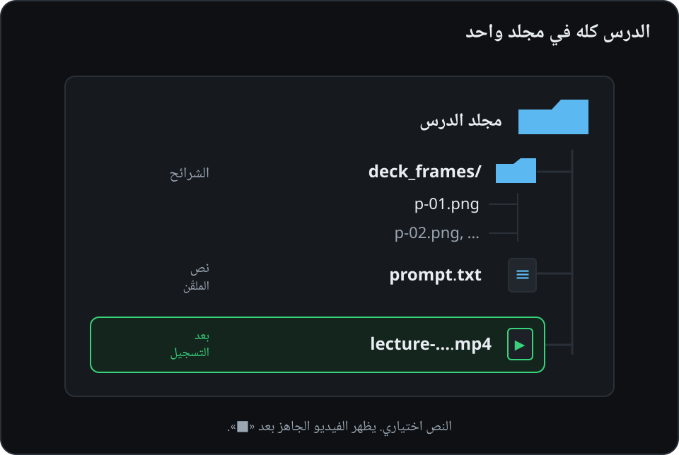
prompt.txt.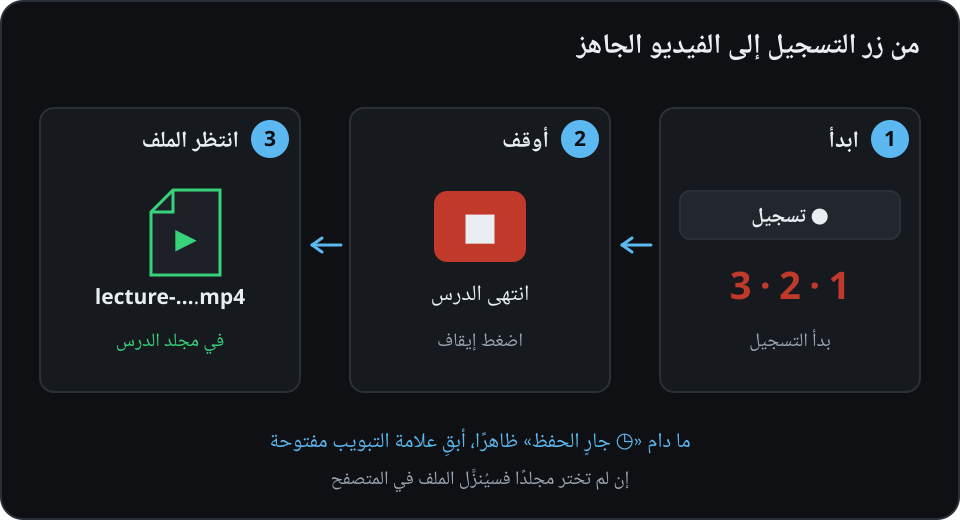
إن كان في الدرس نص للملقّن ولا تحتاجه الآن، فأخفِ الملقّن بالزر «👁».
أخطأت؟ اضغط «⚑ علامة»: سيظهر التوقيت في ملف العلامات، ويسهل إيجاد هذا الموضع عند المونتاج.
مثل تسجيل العرض التقديمي، لكن نصك يمرّ في الأعلى، فتقرأ وأنت تنظر تقريبًا إلى الكاميرا.
ملف نصي عادي. اختره إن لم تكن تعرف Markdown: يُفتح بالمفكرة (Notepad) أو TextEdit
الشيء نفسه لمن يكتب بصيغة Markdown (Obsidian و Typora و VS Code)
يعثر الاستوديو بنفسه في مجلد الدرس على الملف prompt.txt أو prompt.md أو 03-script.md. احفظه في مجلد الدرس نفسه، لا في مجلد الدورة العام.
كيف تحرّره. نزّل القالب ← ضعه في مجلد الدرس بجانب الشرائح ← افتحه بنقرة مزدوجة في المفكرة (Windows) أو TextEdit (Mac) ← استبدل النص واترك أسطر «### شريحة…» كما هي ← احفظه دون تغيير اسمه.
الملف الجديد في TextEdit ليس نصًا عاديًا افتراضيًا. اختر من القائمة «تنسيق ← تحويل إلى نص عادي». الأسهل أن تبدأ من القالب المُنزَّل.
احفظ الملف بترميز UTF-8 (وهو الافتراضي في المحررات الحديثة) حتى يظهر النص العربي صحيحًا.
prompt.txt بعد ملئه.## شريحة العنوان. ولكل صورة تالية سطر عنوان ### شريحة 1.1 — … ثم ### شريحة 1.2 — … وهكذا (الرقم عددان بينهما نقطة)، وتحته ما ستقوله. الكتل تأتي بالترتيب: الأولى للصورة الأولى، والثانية للثانية. المثال أدناه.النص محفوظ باسم آخر؟ لا حاجة لإعادة التسمية: في شاشة البداية، في خانة «نص الملقّن» اختره من القائمة أو اختر «📄 اختر ملفًا من القرص…». سيتذكر الاستوديو اختيارك.
تريد التسجيل بلا ملقّن؟ اختر «— بلا نص —».
### شريحة 1.1 وتحتها نص؛ ابدأ من القالب أعلاه..txt أو .md، لا .rtf ولا .docx.## شريحة العنوان مرحبًا! سنتعلم اليوم كيف نسجّل درسًا. ### شريحة 1.1 — ما نحتاجه نحتاج إلى شيئين: صور الشرائح وهذا النص. السطر الفارغ يبدأ فقرة جديدة. [P] وهذه وقفة قصيرة. ### شريحة 1.2 — كيف نرتّب الملفات نص الصورة الثالثة.
الأسطر التي تبدأ بـ # أو > لا تظهر في الملقّن، فهي عناوين وملاحظات لك. في هذا المثال ثلاث كتل، أي تحتاج إلى ثلاث صور: العنوان واثنتين بعده. يمكن كتابة رقم الشريحة بالأرقام العربية أيضًا (### شريحة ١٫٢)، وتبقى العناوين القديمة بالروسية مدعومة أيضًا. يوجد مثال جاهز لدرس من 4 شرائح في المجلد example/ في المستودع الأصلي؛ نزّله وجرّبه.
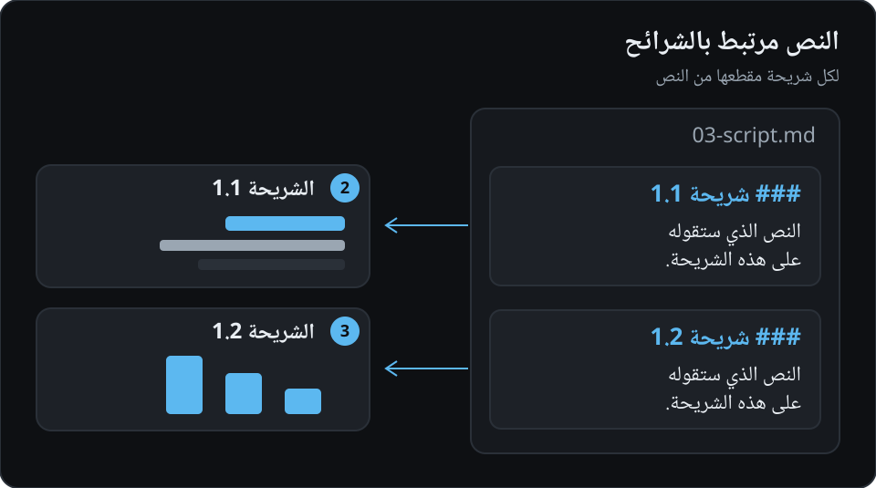
## شريحة العنوان)، لذا فإن ### شريحة 1.1 هي الصورة الثانية، و ### شريحة 1.2 هي الثالثة.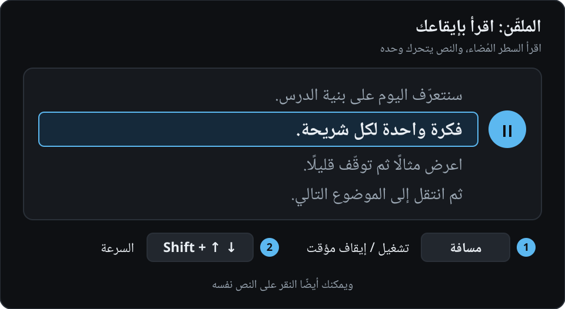
النظر إلى العدسة. ضع الكاميرا تحت الملقّن مباشرة (زر النجمة في مجموعة الكاميرا ينقلها حول الإطار)، فتنظر وأنت تقرأ تقريبًا إلى الكاميرا.
النص صغير أو كبير؟ استخدم «A−» / «A+» في مجموعة الملقّن. تأخرت قليلًا؟ ↑ / ↓ يحرّكان النص.
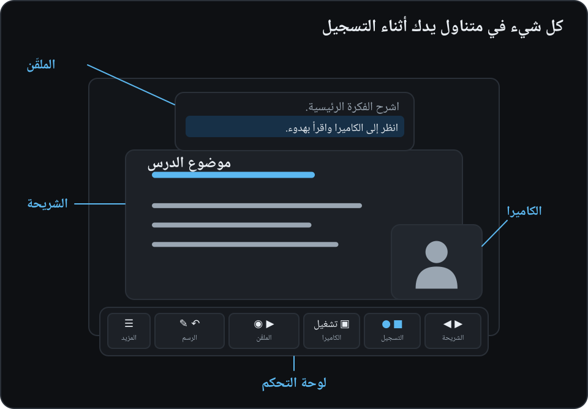
prompt.txt (طريقة الكتابة في قسم «درس مع الملقّن»).الشرائح ضرورية، والنص اختياري. المجلد الذي فيه prompt.txt فقط دون شرائح لن يظهر في قائمة الدروس.
الدرس الذي لم يجد فيه الاستوديو prompt.txt يُعلَّم في القائمة بعبارة «— بلا prompt.txt». بدون نص لن يكون هناك ملقّن، وكل شيء آخر يعمل؛ ويمكنك اختيار ملفك في خانة «نص الملقّن».
في المرة التالية لا حاجة للبحث عن المجلد: ستجد في شاشة البداية «↪ افتح آخر مجلد».
الشرائح دائمًا في مجلد الدرس. وما يُعرض تحديدًا تختاره في شاشة البداية من قائمة «الشرائح».
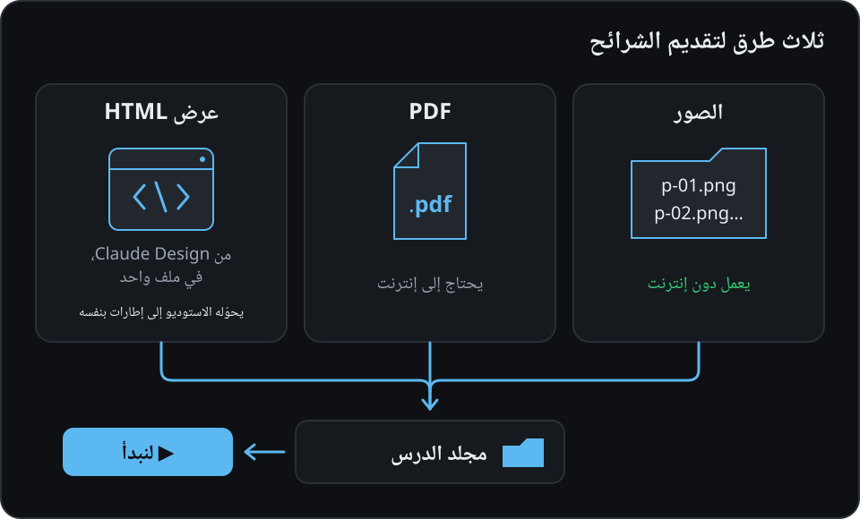
ضع الصور في مجلد الدرس (PNG أو JPG أو WebP…)، والترتيب حسب أسماء الملفات. أو مجلد deck_frames/ فيه p-01.png و p-02.png…
لا حاجة إلى الإنترنت.
في القائمة: «deck_frames — إطارات، N صورة» أو «… — صور، N صورة».
ضع ملف PDF في مجلد الدرس. إن كانت الشريحة على صفحة A4 أو Letter بهوامش، فسيقصّ الاستوديو الهوامش بنفسه.
يلزم الإنترنت، فبدونه لن يُفتح ملف PDF.
في القائمة: «الاسم.pdf — PDF».
احفظ العرض كملف HTML واحد وضعه في مجلد الدرس. في القائمة: «الاسم.html — عرض HTML، يُستورد إلى إطارات».
اضغط «▶ لنبدأ». سيسألك Chrome عمّا تريد عرضه، فاختر «علامة التبويب هذه» ← «مشاركة» ولا تلمس النافذة بينما يتنقّل الاستوديو بين الشرائح.
تُحفظ الإطارات في deck_frames/ بجانب العرض. وبعدها تصبح صورًا عادية، بلا إنترنت وبلا التقاط من جديد.
قبل استيراد عرض HTML على شاشة كبيرة فعّل وضع ملء الشاشة في Chrome لتخرج الشرائح واضحة. على شاشة صغيرة ستخرج الشرائح أقل حدّة قليلًا، وسينبّهك الاستوديو إلى ذلك.
يظهر PowerPoint (PPTX) في القائمة مع ملاحظة «يحتاج إلى تحويل» لكنه لا يُختار؛ احفظه أولًا بصيغة PDF.
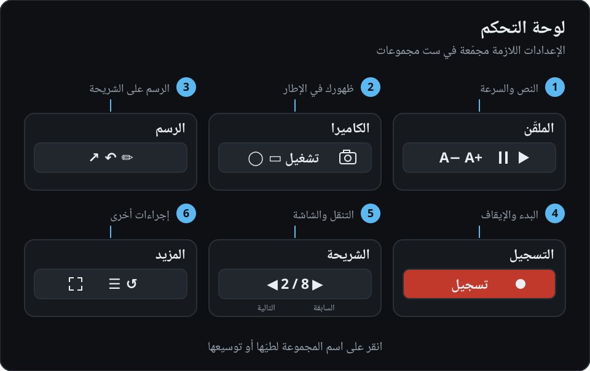
لا ترى «☰» و«⛶» و«?»؟ إذن مجموعة المزيد مطويّة في ملصق. انقر على اسمها فتعود الأزرار (ومعها «💾» و«↺» و«⌄ طيّ»).
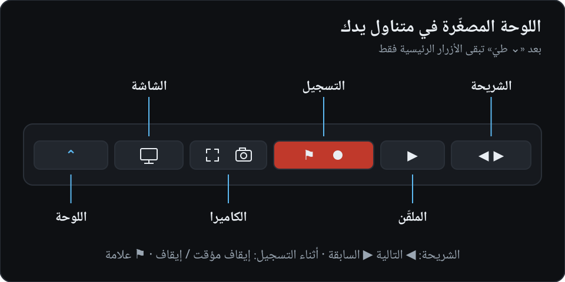
اضغط «⌄ طيّ»، فتختفي اللوحة وتبقى في الأسفل في المنتصف لوحة صغيرة: الأهم فقط، ولا تحجب شيئًا.
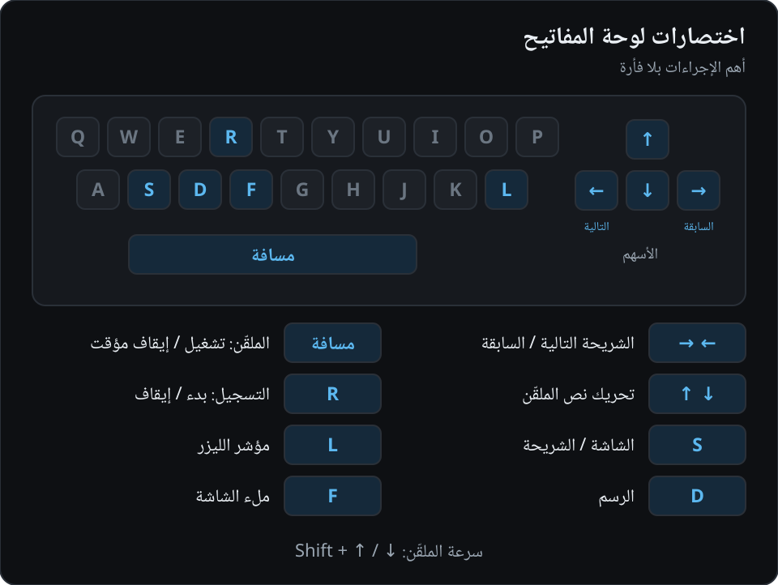
| المفتاح | ماذا يفعل |
|---|---|
| ← / PageDown | الشريحة التالية (باتجاه القراءة العربية) |
| → / PageUp | الشريحة السابقة |
| مسافة | الملقّن: تشغيل / إيقاف مؤقت |
| ↑ / ↓ | تحريك نص الملقّن إلى الخلف / إلى الأمام |
| Shift+↑ / ↓ | الملقّن أسرع / أبطأ |
| R | بدء التسجيل (مع العدّ التنازلي 3-2-1)؛ وأثناء التسجيل: إيقافه |
| S | الشاشة بدل الشريحة / والعودة |
| L | مؤشر الليزر «🔴 المؤشر» |
| D | الرسم «✏️ الرسم» |
| Ctrl/Cmd+Z | التراجع عن خط (في وضع الرسم) |
| F | ملء الشاشة |
لا تعمل الاختصارات في شاشة البداية، ولا حين يكون المؤشر داخل شريط تمرير أو قائمة؛ انقر على الشريحة. الإيقاف المؤقت للتسجيل ووضع العلامة بالأزرار فقط: «⏸» و«⚑ علامة».
اختصارات الأحرف (R و S و L و D و F) تعتمد على المفتاح نفسه؛ إن كانت لوحة المفاتيح على التخطيط العربي فبدّلها إلى الإنجليزية إن لم يستجب المفتاح.
lecture-YYYY-MM-DD-HH-MM-SS.mp4 (أو .webm).….markers.txt فيه العلامات والإيقافات المؤقتة وتغييرات الشرائح: مفيد للمونتاج.بعد «⏹» سيظهر على الزر «⏳ جارٍ الحفظ»، وتحته «أجهّز الملف للمونتاج…». لا تغلق علامة التبويب حتى تظهر عبارة «حُفظ».
إن لم يكتمل تجهيز الملف فسيظهر «🔁 تجهيز للمونتاج (N)»؛ اضغطه ليُكمل الاستوديو العمل. ولإيجاد التسجيلات: «📂 أظهر في المجلد» (يظهر الزر بعد التسجيل، إن كان المجلد مختارًا).
| ماذا حدث | ماذا تفعل |
|---|---|
| «يلزم Chrome (أو Edge)…»، وزر المجلد لا يُضغط | افتح الاستوديو في Chrome أو Edge. Safari و Firefox لا يصلحان. |
| الكاميرا لا تعمل | اسمح بالوصول إلى الكاميرا في نافذة المتصفح (الأيقونة في شريط العنوان). أغلق البرامج الأخرى التي تستخدم الكاميرا (Zoom و Teams). افتح الاستوديو عبر رابط https، لا كملف من القرص. |
| «⚠ لا صوت» | اسمح باستخدام الميكروفون، واختر الصحيح من قائمة الميكروفونات في مجموعة التسجيل. |
| الشاشة لا تُشارَك، وخطأ على macOS | إعدادات النظام ← الخصوصية والأمن ← تسجيل الشاشة وصوت النظام ← فعّل Chrome ثم أعد تشغيله. |
| «⚠ الشاشة بلا صوت» | أوقف «🖥 الشاشة»، وتحقق من «صوت الشاشة»، ثم شغّل المشاركة من جديد وحدّد خانة الصوت. |
| صورة داخل صورة إلى ما لا نهاية | أنت تشارك الشاشة التي فُتح عليها الاستوديو. اختر شاشة أخرى أو نافذة. |
| المفاتيح لا تستجيب | انقر على الشريحة: بقي المؤشر داخل شريط تمرير أو قائمة. |
| لا يوجد ملقّن | في خانة «نص الملقّن» اختر الملف الصحيح بدل «— بلا نص —». تحقق من أن فيه أسطرًا مثل ### شريحة 1.1 وأنه محفوظ كنص عادي (.txt/.md، لا .rtf/.docx). انظر القالب والتحقق من الملقّن. أو أن الملقّن مخفي، فاضغط «👁». |
| PPTX في القائمة لكنه لا يُختار | احفظ العرض بصيغة PDF أو كصور وضعها في مجلد الدرس. |